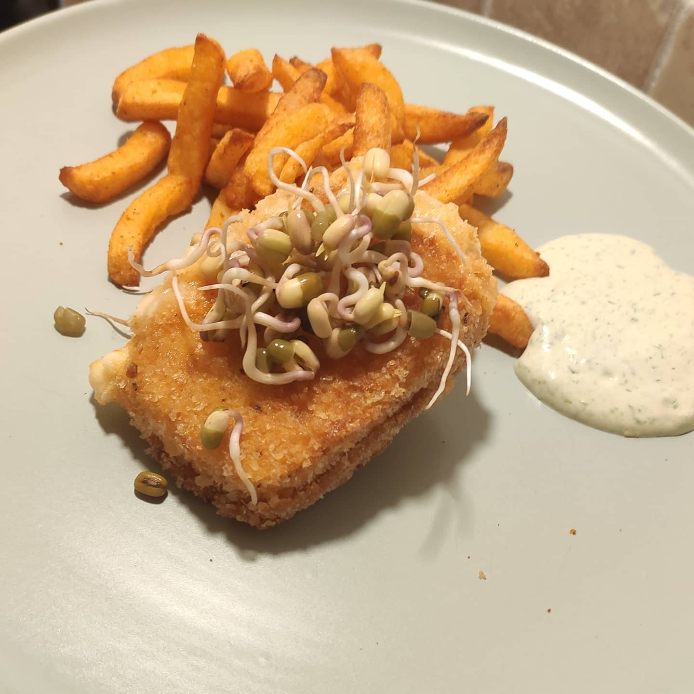

Vyprážaný syr podľa @mamcaaavari — Normy Jedál
Vyprážaný syr s hranolkami pečenými v Tefal Actifry a k tomu dip s medvedím cesnakom. A ja som si to trošku posypala čerstvými klíčkami z mungo fazuliek.
@tefalsk #tefalactifry #syr #vyprazanysyr #hranolky #dip #dipsmedvedimcesnakom #klicky #mungobean #mungofazulky #yummy #foodlover #food #milujemkedimchuti #milujemvarenie #varenieslaskou #vareniemabavi #vecera